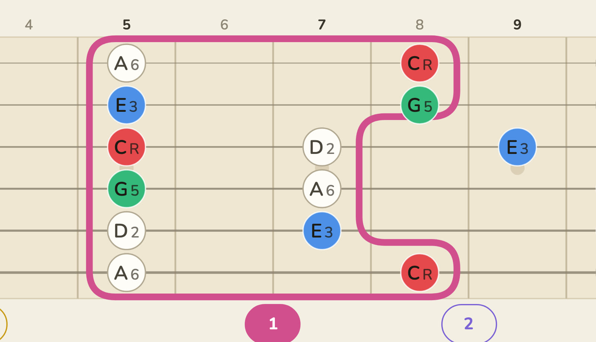
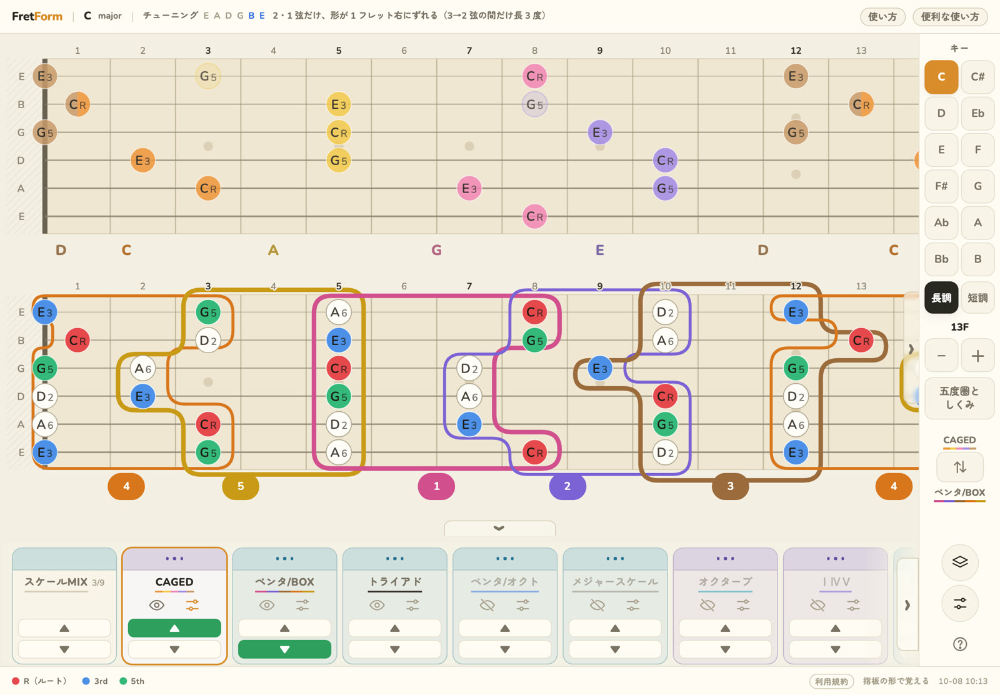
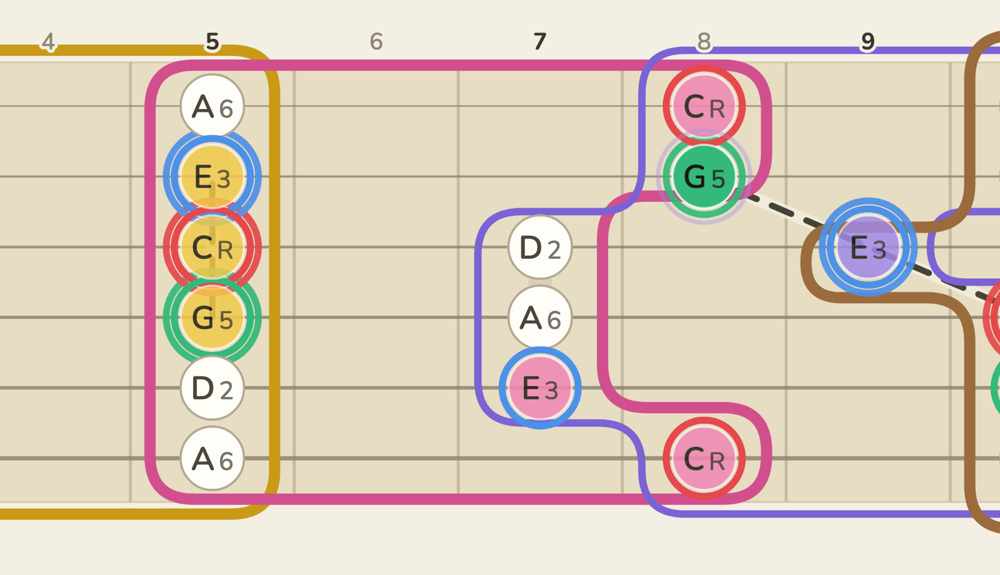
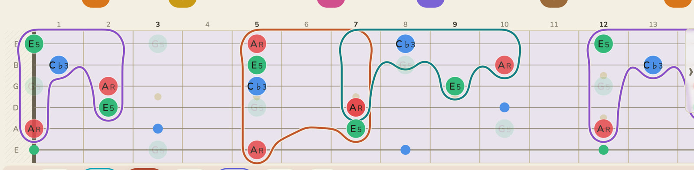
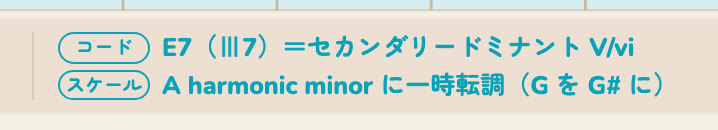
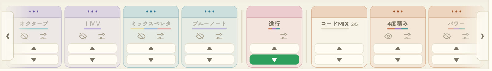
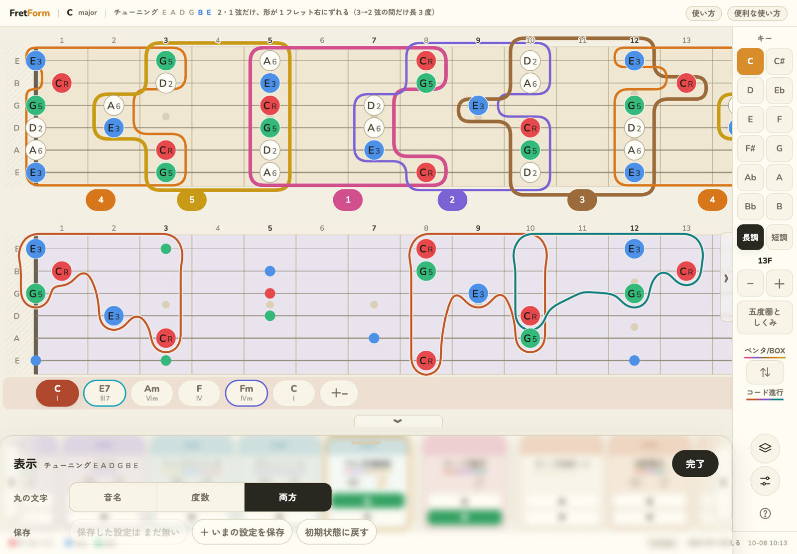

便利な使い方
FretForm は、ギターの指板の上の音を、目で見て覚える ためのアプリです。スケールやコードの「形」を、いろいろな角度から並べたり重ねたりして見ることで、音どうしの関係を感覚でつかめます 。
ギターは、同じ押さえ方（形）を横にずらすだけで、別のキーでも同じように弾けます。だから、場所を 1 つずつ暗記するより、形で覚えると、一気に指板の世界が広がります 。
このページでは、まず 1 つの形を見るところから始めて、少しずつ組み合わせ方を紹介します。
このページで出てくる言葉
キー ：曲の中心になる音（C、G など）。キーが変わると、使う音の組み合わせが変わります。スケール ：そのキーで使う音の並び。ペンタ （ペンタトニック）は 5 つの音だけの、いちばんよく使うスケール。コード ：同時に鳴らす音の組み合わせ（C、Am など）。R・3rd・5th ：コードやスケールの中での音の役割。R（ルート）は中心の音、3rd・5th はそこから 3 番目・5 番目の音。
1 まず 1 つの形を見る — ペンタの Box 1丸の色と文字
指板の丸は、そのキーで使う音です。丸の色は役割で決まっていて、R 、E3 …）。

C キーの Box 1。赤い R（C）の場所が、形を覚える手がかりになります。 Box を 1 つずつ表示する
ペンタの枠は、よく使う 5 つの押さえる場所（Box 1〜5）です。ネックの下の番号を押すと、その Box の表示・非表示が切り替わります。最初は 1 つだけ出して覚える のが早道です。
Box 2〜5 を順に押して隠し、また順に戻したところ。番号のボタンは枠と同じ色で、その形の真下にあります。 キーを変える
右のメニューでキーを変えると、指板はそのままで、形が横に滑って 新しいキーの場所へ移ります。形はそのまま、場所だけが変わる。これがこの画面のいちばん大事な見え方です。
Box 1 だけを出して、キーを C → D → E → D → C と変えたところ。 拡大する
右のメニューの − ＋ で、見えるフレットの数（24F・13F・9F・6F）を変えられます。
＋ を 2 回押して 6F まで拡大し、− を 2 回押して 13F に戻したところ。
2 2 段で見比べる — CAGED とペンタカードの ▲▼ で段に出す
指板は上下 2 段。下の列のカードの ▲ で上の段、▼ で下の段に出します。いま出ているほうのボタンは緑になります。もう一方の段に出ているカードを押すと、2 枚が上下で入れ替わります。
上にペンタ/BOX、下に CAGED を出した状態から、▲ と ▼ を順に押したところ。押すたびに 2 枚が上下で入れ替わります。 同じ場所を縦に見比べる
2 段はフレットの位置がそろっているので、同じ場所に何があるか を縦に見比べられます。ペンタの 5 つの Box は、それぞれ CAGED のどれか 1 つのフォームに乗っています（どのキーでも同じ）。そこで同じ場所は同じ色にしています：

同じ色が縦にそろいます。CAGED の色は、R・3rd・5th の赤・青・緑と取り違えない色にしてあります。
3 重ねて 1 枚で見る — スケールMIXスケールMIX を出す
見比べに慣れたら、重ねます。スケールMIX は、目のアイコンがオンのカードを全部重ねた 1 枚です（最初は CAGED・ペンタ/BOX・トライアド）。上の段にスケールMIX、下の段にその中の 1 枚を出すと、全体と部分を並べて見られます。
上の段にスケールMIX、下の段にペンタ/BOX。 目のアイコンで重ねるものを選ぶ
カードの目のアイコン を押すと、そのカードをスケールMIX に重ねるかどうかが切り替わります。
CAGED の目をオフにして戻し、次にトライアドの目をオフにして戻したところ。 重なる順を変える
カードの並びが重なりの順です（左ほど手前）。カードの上の ⋯ を押したまま横に動かすと入れ替わります。
CAGED をペンタ/BOX の右へ動かし、また戻したところ。手前になったほうが丸を塗ります。 輪の色を読む
同じ位置に 2 つ以上の音が来たときは、手前の段が丸を塗り、奥の段は外側の輪になります。輪の色で「この音はペンタの R でもある」が分かります。

塗られているのは手前の CAGED。外側の赤・青・緑の輪は、同じ音がペンタの R・3rd・5th でもあることを示します。
4 コードを見る — ダイアトニックとコードMIXダイアのコードを押す
ダイア （ダイアトニックコード）のカードを出すと、ネックの下にそのキーの 7 つのコード（C・Dm・Em…）が並びます。ボタンの下の小さい文字（Ⅰ・Ⅱm…）は、キーの中での度数（スケール・ディグリー）。押したコードの押さえ方 が、枠で囲んで出ます。枠の上の辺は 1 弦の上、下の辺はフレットごとに、そのフレットで押さえるいちばん低い弦の音の下まで下がり、フレットの境目で山になります。押さえ方は一般的なコード表の形（6・5・4 弦ルートのバレーと、ナットの近くの開放コード）で、枠の色はルートを置く弦ごとに変わります。
下の段にダイアを出して、Dm → Em → F → G → C と押したところ。 押さえ方を重ねる — コードMIX
ドロップ2・4 度積み・パワー・シェルも同じ作りで、これらはコードMIX に重なります。コードを選ぶボタンは全部の段で同期するので、重ねると必ず同じコードどうし。見分け方：ダイア＝囲みの枠、ほかは音を順になぞる線で、二重線＝ドロップ2、細い線＝シェル、細い破線＝パワー、点線＝4 度積み。カードの設定の「線」で、枠や線を消して丸だけにすることもできます。ダイアはいちばん下（カードの並びの最後）に置いてあります。
上の段にコードMIX、下の段にダイア。F → G → Am → C と押すと、どちらの段も同じコードに切り替わります。
5 スケールとコード進行を並べるコード進行のコードを順に押す
ここまでの組み合わせです。上の段にペンタ、下の段にコード進行 （最初に開いたときの並び）。最初に入っている進行 C – E7 – Am – F – Fm – C は、使い方を見るための例です。7 章の方法で自分の曲の進行に作り替えられます。
2 段はフレットがそろっているので、いま押さえているコードのすぐ上で、どのスケールの音が弾けるか がそのまま見えます。キーの中のコード（ダイアトニック・コード）なら、弾けるのはキーのペンタのまま です。C – Am – F なら、どれも C のペンタで弾けます。キーの外のコードでは、6 章のようにスケールの側が変わります。
C → E7 → Am → F → Fm → C と順に押したところ。共通の音は残り、消える音はゆっくり薄く、新しい音はゆっくり濃くなります。 押さえ方と、ほかの場所の同じ音
下の段の枠がそのコードの押さえ方です（ダイアと同じ囲み方）。枠の外の小さい丸は、同じコードの音がほかにどこにあるかを示します。

Am を押したところ。
6 キーの外のコード — セカンダリードミナントと借用和音進行にキーの外のコードがあると、ボタンの縁に色が付きます。青緑＝セカンダリードミナント 、藍＝借用和音 、
最初の進行には、例としてキーの外のコードを 2 つ入れてあります（E7 と Fm）。セカンダリードミナントや借用和音になるのは E7 や Fm に限りません。どのコードがそうなるかは、キーと、進行の中での前後のつながりで決まります。自分で入れた進行でも、同じように判定して色が付きます。
セカンダリードミナント — 例：E7
例の E7（Ⅲ7） は、この進行では次の Am へ解決するドミナント（V/vi）です。鳴らしている間は A を主音に一時転調している、とみて、ヘッダーに「一時転調中！ A harmonic minor」、ネック全体が青緑になります。上の段は A を R として読み替え、G を薄く、G# を青緑の丸で 足します。
C → E7 → Am と押したところ。E7 の間だけネックが青緑になります。 ネックの下の説明
キーの外のコードを押すと、ネックの下に説明が 2 行出ます。上の行がコードの役割、下の行がスケール側で変わることです。

例の E7 を押したときの説明。 借用和音 — 例：Fm
例の Fm（Ⅳm） は、同主短調（C マイナー）から借りてきたコードです。キーは C のまま、A を薄く、特徴音 A♭ を藍の丸で 足します（C major の A を A♭ に替える＝ C harmonic major）。
F → Fm → C と押したところ。Ⅳ → Ⅳm → Ⅰ は、ポップスでよく出る借用和音の使い方です。
どうやって見分けているか
ドミナントの形（長 3 度＋短 7 度など）で、次のコードが 5 度下に解決していればセカンダリードミナント。
同じ主音の別の旋法（長調なら同主短調など）の音だけでできていれば借用和音。
解決しないドミナントもセカンダリードミナントとして扱います。裏コードのように型どおりでないものは「キー外」とだけ示します。
7 コード進行を自分の曲に作り替えるネックの下の＋− を押すと、コード進行の編集が開きます。
いまの進行 ：押すとそのコードを出します。× で消せます。コードを足す ：ルート（12 個、度数つき）を選んでから、種類（メジャー・マイナー・7th・sus・9th・13th など 20 種類）を押すと、進行の最後に足されます。
＋− で開き、ルートの D、種類の D7 と押すと、進行の最後に D7 が足されます。最後に × で消したところ。 押さえ方は、ルートを 6・5・4 弦に置いたバレーの形と、ナット近くの開放コード（C なら x32010、C7 なら x32310 など）。
8 カードと右のメニュー — 五度圏・保存もカードの色
カードは 4 種類あり、カードの色で種類が分かります 。「段を追加」のメニューの見出しも同じ色です。
青＝スケール ：ペンタ/BOX・ペンタ/オクト・メジャースケール・ミックスペンタ・ブルーノート・トライアド。キーの音がどこにあるかを見るカードで、目のアイコンでスケールMIX に重ねられます。紫＝目印 ：CAGED・オクターブ・Ⅰ·Ⅳ·Ⅴ。指板の上で場所を探す手がかりになるカードです。これもスケールMIX に重ねられます。桃＝コード進行 ：押すたびに中身が変わるので、どこにも重ねません。橙＝コード ：ダイア・4 度積み・パワー・シェル・ドロップ2。コードの押さえ方を見るカードで、目のアイコンでコードMIX に重ねられます。

左から紫（目印）・青（スケール）・桃（コード進行）・橙（コード）のカード。 上段と下段を入れ替える
右のメニューの下に、いまの上段と下段の名前 があります。間の ⇅ を押すと、上下が入れ替わります。
⇅ を押して入れ替え、もう一度押して戻したところ。 下の列をしまう
盤のすぐ下のつまみで、下の列をしまえます。
つまみで下の列をしまって、また出したところ。 五度圏としくみ
右のメニューの五度圏としくみ で開きます。五度圏は、輪ごとに書いてあるものが違います。窓の中にも同じ見方が出ます。
いちばん外の輪 ：長調のキー（C・G・D…）。タップするとそのキーに変わります。外から 2 番目の輪 ：外のコードが、いまのキーで何番目のコードか（Ⅰ・Ⅳ・Ⅴ）。外から 3 番目の輪 ：平行短調のキー（Am・Em…）。外の長調と同じ音を使う短調です。外から 4 番目の輪 ：3 番目のコードの度数（Ⅱm・Ⅲm・Ⅵm）。真ん中 ：いまのキー。
光っている 6 つが、そのキーのダイアトニック・コードです。
「キー」に切り替えると、外から 2 番目の輪が ♯・♭ の数になります。C から時計回りに 1 つ進むごとに ♯ が 1 つずつ増えます。増える順はいつも「ファドソレラシミ」（F♯ C♯ G♯ D♯ A♯ E♯ B♯）で、窓の右の列が左から灯っていきます。反時計回りでは ♭ が「シミラレソドファ」（B♭ E♭ A♭ D♭ G♭ C♭ F♭）の順に増えます。
窓の下の「コードの種類が決まるしくみ」は、なぜ Ⅰ は maj7、Ⅴ は 7th、Ⅶ は m7♭5 になるのかを 1 枚で見せる図です。
「キー」に切り替えて G → D → A と押すと、右の ♯ の列が F♯、C♯、G♯ と左から灯ります。F → B♭ → E♭ では ♭ の列が灯ります。 表示設定と保存
右下の「表示設定」で丸の文字（音名／度数／両方）を選べます。いまの設定を保存 しておけばあとで呼び出せ、初期状態に戻す で最初の並びに戻ります。保存先はこの端末のブラウザの中だけ です。

表示設定。
赤・青・緑は R・3rd・5th だけの色。キーの外は寒色（青緑＝一時転調、藍＝借用和音の特徴音）。
迷ったら、ヘッダーの「使い方」で画面の案内（ツアー）をいつでも呼び出せます。